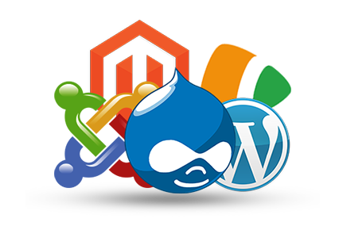

Proyectos
Seguridad y Alta Disponibilidad
Proyecto de configuración de entornos seguros
Configuración de entornos seguros y de alta disponibilidad, garantizando protección de datos y continuidad del servicio mediante cifrado, balanceo de carga y redundancia.
Ver proyecto

Implantación de Aplicaciones Web
Proyecto de despliegue de aplicaciones web
Despliegue y configuración de aplicaciones web en entornos Linux, asegurando su correcto funcionamiento mediante la instalación de servidores, bases de datos y sistemas de seguridad.
Ver proyectoPython
Proyecto de desarrollo de scripts
Desarrollo de scripts y aplicaciones con Python, enfocándome en la automatización de tareas, la gestión de sistemas y el procesamiento de datos.
Ver proyecto